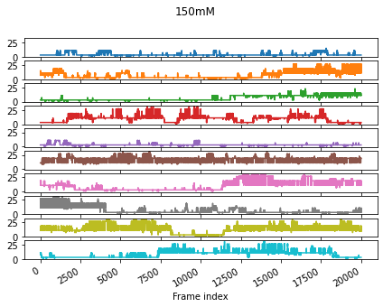
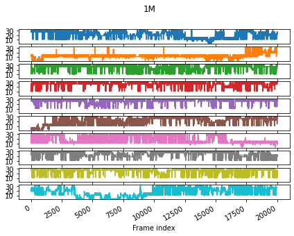
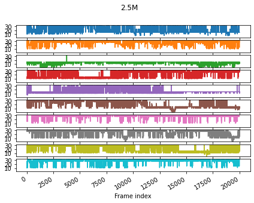
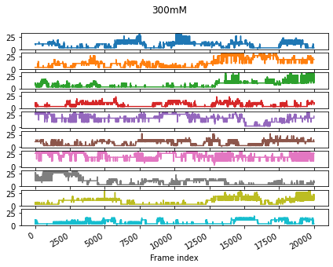
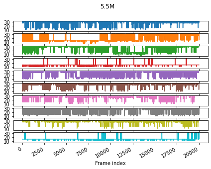
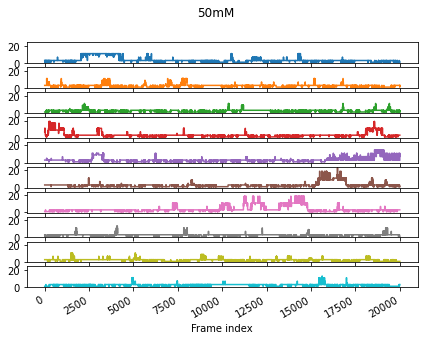
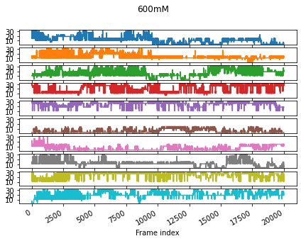

Discretization tutorial¶
Discretization¶
The features are discretized based on selected discretization scheme. Three discretization schemes are curreltly available: combinatorial.
Combinatorial Discretize, for each frame, which combinations of regions are occupied by all ligands in the system (one state per frame)
Set the region boundaries regions. The minimum (0) and maximum (max) value are implicit.
E.g.: regions (4.5, 10, 24) corresponds to:
region 1 - (0, 4.5(
region 2 - (4.5, 10(
region 3 - (10, 24(
region 4 - (24, max(
Labels labels of each region are optional but recommended (otherwise reverts to numerical). Number of labels is plus one the number of defined regions.
[10]:
importlib.reload(main)
shells=[4.5, 10, 12, 24]
labels=['A', 'P', 'E', 'S', 'B']
discretize=main.Discretize(project_systems, feature=features['nac'], results=results)
combinatorial=discretize.combinatorial(shells, labels=labels)
print(combinatorial)
#TODO: Make a proper function.
sampled_states_trj={}
for trajectory in combinatorial.columns:
sampled_states_trj[trajectory]=pd.unique(combinatorial[trajectory].values.flatten())
discretize.plot(combinatorial)
l1 calb ... \
l2 MeOH ...
l3 50mM ... 5.5M
l4 1 2 3 4 5 6 7 8 9 10 ... 1 2 3 4 5 6
Frame index ...
0 3 3 1 7 3 3 1 3 3 1 ... 31 15 15 15 27 27
1 3 3 1 7 3 3 1 3 3 1 ... 31 15 15 15 27 27
2 3 3 1 11 3 3 1 3 3 1 ... 31 15 15 11 31 27
3 3 3 1 11 3 3 1 1 3 1 ... 31 15 15 15 31 27
4 3 3 1 7 3 3 1 3 3 1 ... 31 15 31 15 31 15
... ... .. .. .. .. .. .. .. .. .. ... ... .. .. .. .. ..
19995 1 3 1 3 7 1 3 1 1 3 ... 31 15 31 15 31 31
19996 1 1 1 3 7 1 3 1 1 3 ... 31 15 31 15 31 31
19997 1 3 1 3 7 1 3 1 1 3 ... 31 15 31 15 31 31
19998 1 3 1 3 11 1 3 1 1 3 ... 31 31 31 15 31 31
19999 1 3 1 3 3 1 3 1 1 3 ... 31 31 31 15 31 31
l1
l2
l3
l4 7 8 9 10
Frame index
0 31 31 31 15
1 31 27 31 15
2 31 31 31 15
3 31 31 31 15
4 31 31 31 15
... .. .. .. ..
19995 31 15 31 31
19996 31 15 31 31
19997 31 31 31 15
19998 31 31 31 31
19999 31 31 31 31
[20000 rows x 70 columns]
150mM
1M
2.5M
300mM
5.5M
50mM
600mM






